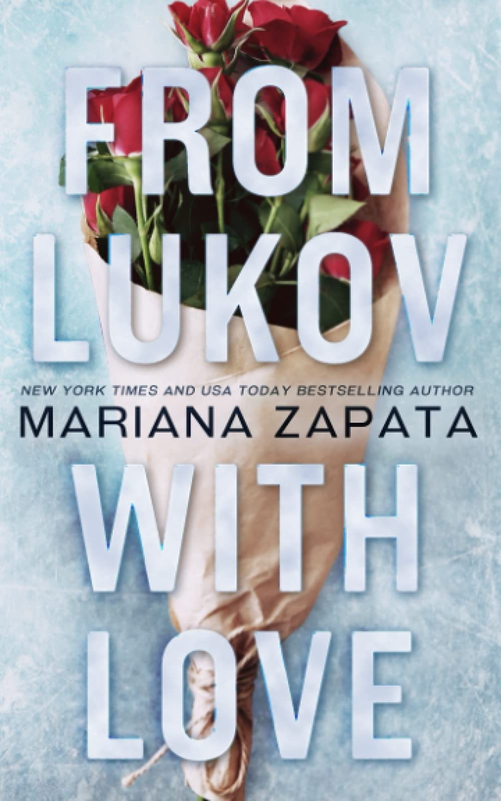

Favorite
'From Lukov with Love' by Mariana Zapata
Book Description
If someone were to ask Jasmine Santos to describe the last few years of her life with a single word, it would definitely be a four-letter one.
After seventeen years—and countless broken bones and broken promises—she knows her window to compete in figure skating is coming to a close.
But when the offer of a lifetime comes in from an arrogant idiot she's spent the last decade dreaming about pushing in the way of a bus, Jasmine might have to reconsider everything.
Including Ivan Lukov.
-Mariana Zapata, back of book summary
Why I love it
What is there not to love about a love story on ice. Ice skating and hockey tropes are my favorite to read and Mariana Zapata does the genre justice. She is well-known for her slowburn romance books that make you unable to put your book down and this one is no different. I really loved the idea of them once being friends turned rivals and then forced to become ice skating partners in a one last ditch effort to get to Nationals.
This book reminded me a lot of the Netflix show "Spinning Out", which utilizes a similar concept of rivals to lovers and forced to be skating partners. Unfortunately the show got canceled after the first season, but it still remains one of my favorite Netflix originals solely because it felt like a live-action version of this book.